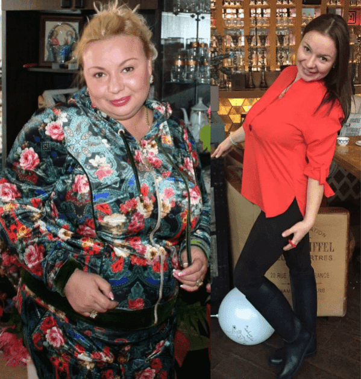

Наскоро четох блог пост на някаква ""закръглена жена"" (както тя сама се наричаше), където доказваше, че размерът на жената няма значение, защото най-важното нещо е нейният чар. И знаете, че не мога да мълча по този въпрос!
Сигурен съм, че всяко пълничко момиче или жена всъщност е нещастно от това, че има наднормено тегло, криейки го зад извинения, като ""Обичам се такава, каквато съм"" или ""Има какво друго да обичат в мен"". Не! Не трябва да сте ""такива, каквито сте""! Повярвайте ми, никой мъж не иска да гледа изпъкнал корем, голям задник или гънки на мазнините по бедрата! И със сигурност няма да иска да пипа всичко това
Но ситуацията може да се промени! Искам нашата история да е вдъхновяващ пример за други.
Преди 5 години се ожених по любов. Живеехме много добре, Ивета (съпругата ми) се грижеше за къщата, а аз правех пари. Изкарвах много пари, затова често ходехме на "ол инклузив" почивки. Непрекъснато излизахме да вечеряме навън. Винаги можехме да си позволим да каним всичките си приятели на домашни партита с много храна... Ето как Ивета качи много килограми, малко по малко, през 2 години. А аз говоря за 5, 10 и дори 20 кг! Веднъж се качи на кантара и той показа повече от 100 кг! Разбира се, тя се депресираше от това, но вместо да започне програма за отслабване, тя започна да се успокоява със сладолед и торти. И разбира се, качи още килограми.
Веднъж наши стари приятели ни дойдоха на гости. Не ги бяхме виждали известно време. Те гледаха Ивета и забелязах ужас в очите им. И тогава ми казаха насаме: "С такова тегло е почти невъзможно да отслабне. Ако не искаш да живееш цял живот с дебелана, трябва да си тръгнеш сега, преди да е станало прекалено късно.
Трудно начало
Не спах цяла нощ след този разговор. От една страна разбирах, че приятелите ми може би са прави. Но от друга страна, как можех да напусна жена си, която всъщност много обичах? Нямах представа какво да направя! Сутринта взех решение: не можех да я напусна, а и не исках. Щях някак си постепенно да я върна в нормалното й състояние.
Разбира се, първото нещо, което ми хрумна, беше здравословно хранене. Но как щях да кажа на Ивета, че трябва да спре да поръчва пилешки крилца, пица и ребърца и да премине към нискомаслено сирене и зеленчуци? И ми дойде идеята да й готвя вечери "изненади". Прекарах няколко вечери онлайн в търсене на рецепти за нискокалорични ястия. Ивета не е никак глупава и се сети за какво става въпрос. Тя ми благодареше учтиво за "изненадите" и ядеше това, което й бях сготвил, със сълзи на очите.
Мина една седмица. Дали защото жена ми се успокояваше с храна, докато ме няма, или просто защото този метод не работеше, но нямаше никакъв ефект. Затова реших да опитам друг радикален метод за отслабване - спорт. Но за разлика от вечерите "изненади", които изглеждаха съвсем невинни, абонамент за фитнеса щеше да е доста обидно нещо.
И тогава ми хрумна блестяща идея. Купих абонамент за фитнеса за двамата ни и помолих приятелите ни да ни го дадат като "подарък" за Коледа. Струваше ми се, че Ивета пак разбра откъде идва подаръкът. Но все пак се преструваше на много развълнувана и ходеше с мен на фитнес. Ходехме 3 пъти в седмицата през месец и на мен ми харесваше, но съпругата ми не се чувстваше добре, просто не й харесваха тренировките и затова нямаше резултат...
Последният опит
Изведнъж Ивета престана да ходи на фитнес, заключи се вкъщи и не излизаше оттам. Болеше ме да я гледам и веднъж дочух един разговор между нея и нейна приятелка по телефона. Жена ми плачеше и каза, че ме обича и ще ме напусне, за да ме спаси от това да страдам с нея. Това беше шокиращо! И именно това ме накара да взема решителни мерки.
Същия ден, когато Ивета заспа, започнах да търся информация в различни форуми за отслабване. Надявах се да открия методи, които не сме пробвали все още. И след като прегледах може би стотици форуми, намерих този продукт!
Хранителната добавка за отслабване се казва и вече е помогнала на някои жени. Гледайки техните снимки "преди" и "след", едва се сдържах да отида при жена ми веднага и да й ги покажа. Но не, трябваше да действам по-внимателно.
Те са постигнали целта си (свалили са килограми) - 2 седмици
Пишеше на уебсайта (между другото единствения официален уебсайт, където се продава добавката), че е направена от натурални съставки. Помислих си, че няма да навреди, като се има предвид, че продуктът е изцяло натурален и го ПОРЪЧАХ.
Много различен живот
Считам този ден за повратната точка в живота ни! Първо тайно добавях добавката към напитките на Ивета. Когато забелязах след няколко седмици, че бузите на Ивета не са вече толкова надути и е свалила малко мазнини от корема, реших да й предложа като обикновена хранителна добавка с витамини. И се получи! След като видя как тялото й се променя пред очите й, съпругата ми стана по-енергична и уверена. Тя мислеше, че това е ефектът на "витамините".
Изминаха 8 седмици и Ивета реши да се премери. Оказа се, че вече е свалила 18 кг! Тогава реших, че е време да й кажа за . За моя изненада, тя не се обиди. Напротив, благодари ми и каза, че нямало да може да постигне такъв резултат сама.
След задушевния ни разговор всичко се промени. Първо, Ивета най-накрая спря да бъде стеснителна. Второ, да я гледам ме правеше щастлив и трето, връзката ни стана още по-открита от преди. Жена ми взимаше още около един месец. И се случи така, че след 10-12 седмици тя намали теглото си с ... 36 кг! Не можех да сваля поглед от нея, беше толкова красива. Осъзнах, че съм бил прав, като я подкрепих, вместо да я изоставя. И сега се наслаждавам на резултатите от усилията ми.

Когато теглото на съпругата ми стана 68 кг, тя изведнъж спря да го намалява. Отначало не можехме да разберем какъв е проблемът. Но се оказа, че Ивета е бременна! Спомням си че тогава се просълзих. Мечтаехме за това от няколко години.
Разбира се, жена ми качи няколко килограма по време на бременността, но пак беше по-слаба от преди една година. Освен това теглото се върна към нормата, след като роди. А това, което ни харесва най-много, е че излишните килограми не се връщат. Отново можем да си позволим ресторанти и пиршества с приятели. Ивета не трябва да се тревожи за поредното парче пица или топка сладолед, защото сега има... ние имаме . Знаем къде да го поръчаме, за да избегнем фалшивите продукти. И знаем точно колко ефективен е !
P.S. Сега Ивета има перфектно тяло! Не съм очаквал, че тя отново може да има толкова апетитни извивки, след като отслабна. Коремът й е плосък, а гърдите й останаха същите. Завиждам си!
Теодор Станев